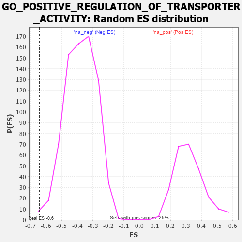

| | | Dataset | 7d |
| Phenotype | NoPhenotypeAvailable |
| Upregulated in class | na_neg |
| GeneSet | GO_POSITIVE_REGULATION_OF_TRANSPORTER_ACTIVITY |
| Enrichment Score (ES) | -0.64193135 |
| Normalized Enrichment Score (NES) | -1.6998909 |
| Nominal p-value | 0.0040214476 |
| FDR q-value | 0.038576502 |
| FWER p-Value | 0.938 |
Table: GSEA Results Summary
 Fig 1: Enrichment plot: GO_POSITIVE_REGULATION_OF_TRANSPORTER_ACTIVITY
Fig 1: Enrichment plot: GO_POSITIVE_REGULATION_OF_TRANSPORTER_ACTIVITY
Profile of the Running ES Score & Positions of GeneSet Members on the Rank Ordered List
| PROBE | GENE SYMBOL | GENE_TITLE | RANK IN GENE LIST | RANK METRIC SCORE | RUNNING ES | CORE ENRICHMENT | | 1 | KMT2A | | | 1130 | 0.458 | -0.1210 | No |
| 2 | KCNC2 | | | 2075 | 0.295 | -0.2262 | No |
| 3 | COX17 | | | 3019 | 0.147 | -0.3381 | No |
| 4 | CHP1 | | | 3089 | 0.138 | -0.3404 | No |
| 5 | KCTD7 | | | 3417 | 0.088 | -0.3774 | No |
| 6 | CDK5 | | | 3480 | 0.080 | -0.3815 | No |
| 7 | WNK3 | | | 4153 | -0.034 | -0.4645 | No |
| 8 | STAC | | | 4327 | -0.064 | -0.4833 | No |
| 9 | ADRB2 | | | 4352 | -0.068 | -0.4832 | No |
| 10 | SGK1 | | | 4852 | -0.168 | -0.5382 | No |
| 11 | WNK1 | | | 5650 | -0.362 | -0.6217 | Yes |
| 12 | TRPC6 | | | 5784 | -0.401 | -0.6199 | Yes |
| 13 | ACTN2 | | | 5960 | -0.458 | -0.6207 | Yes |
| 14 | STAC2 | | | 5987 | -0.466 | -0.6024 | Yes |
| 15 | STIM1 | | | 6169 | -0.528 | -0.6007 | Yes |
| 16 | RGN | | | 6233 | -0.547 | -0.5833 | Yes |
| 17 | STK39 | | | 6274 | -0.563 | -0.5623 | Yes |
| 18 | GALR2 | | | 6355 | -0.599 | -0.5446 | Yes |
| 19 | CCR2 | | | 7003 | -0.939 | -0.5825 | Yes |
| 20 | CFTR | | | 7143 | -1.030 | -0.5523 | Yes |
| 21 | ANK2 | | | 7298 | -1.170 | -0.5175 | Yes |
| 22 | CALM1 | | | 7567 | -1.499 | -0.4818 | Yes |
| 23 | ANK3 | | | 7690 | -1.740 | -0.4165 | Yes |
| 24 | PKD2 | | | 7822 | -2.167 | -0.3326 | Yes |
| 25 | KCNC1 | | | 7835 | -2.249 | -0.2300 | Yes |
| 26 | CALM3 | | | 7869 | -2.525 | -0.1171 | Yes |
| 27 | TCAF1 | | | 7901 | -2.803 | 0.0088 | Yes |
Table: GSEA details [plain text format]

Fig 2: GO_POSITIVE_REGULATION_OF_TRANSPORTER_ACTIVITY: Random ES distribution
Gene set null distribution of ES for GO_POSITIVE_REGULATION_OF_TRANSPORTER_ACTIVITY